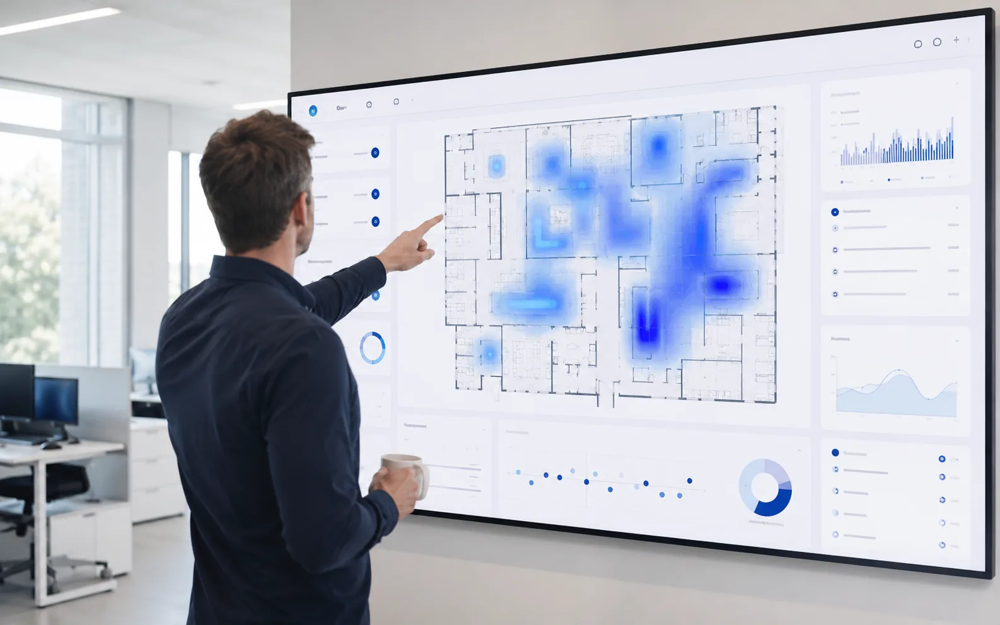

Roboter im Einzelhandel: was sich 2026 wirklich rechnet

Der Einzelhandel hat kein Technologie-Problem, er hat ein Hände-Problem: unbesetzte Stellen, steigende Personalkosten (20–30 % der Gesamtkosten), und Kunden, die trotzdem sofort Antworten erwarten. Roboter sind 2026 keine Zukunftsvision mehr für die Fläche — aber sie funktionieren nur, wenn man sie als das einsetzt, was sie sind: Spezialisten für Routine, nicht Ersatz für Verkäufer. Hier sind die Use Cases, die sich wirklich rechnen.
Die 5 Use Cases mit nachweisbarem ROI
| Use Case | Was der Roboter tut | Was es bringt |
|---|---|---|
| Kundennavigation | „Wo finde ich…?" beantworten, zum Regal führen | entlastet Personal um Stunden pro Tag, weniger Kaufabbrüche |
| Frequenz-Analytik | anonyme Besucherströme, Laufwege, Verweilzonen messen | bessere Flächen- & Personalplanung — wie Website-Analytics, nur für den Laden |
| Angebots-Aktivierung | Aktionen erklären, zu Aktionsflächen führen | messbarer Zusatzumsatz pro Kampagne |
| Empfang & Frequenzmagnet | begrüßen, Orientierung geben, Aufmerksamkeit erzeugen | PR-Wert, längere Verweildauer, Differenzierung |
| Rundgänge nach Ladenschluss | Kontroll- und Dokumentationsgänge | Sicherheit & Doku ohne Nachtschicht |
Was im Einzelhandel NICHT funktioniert
Ehrlichkeit gehört dazu: Kassieren, Regale einräumen und echte Fachberatung sind 2026 noch keine Roboter-Aufgaben — wer Ihnen das verkauft, verkauft Ihnen eine Enttäuschung. Branchenweit erfüllen nur 35–40 % der Roboter-Einführungen die Erwartungen, fast immer aus demselben Grund: Das Gerät wurde gekauft, bevor die Aufgabe definiert war. Deshalb starten wir umgekehrt — Standortanalyse, dann Pilot mit Erfolgskriterien, dann erst Betrieb.
Datenschutz: der unterschätzte Erfolgsfaktor
Kameras im Kundenraum sind in Deutschland ein Minenfeld. Unser Ansatz ist privacy-first: keine Gesichtserkennung, keine Bewegungsprofile einzelner Personen — Frequenzdaten kommen aus anonymer LiDAR-Sensorik mit über 99 % Zählgenauigkeit. Das ist nicht nur DSGVO-konform, es ist auch das Argument, mit dem Ihr Betriebsrat und Ihre Kunden mitziehen.
So starten Händler 2026 realistisch
- Klein anfangen: Sensorik-Paket ab 499 €/Monat — Daten sammeln, bevor ein Roboter rollt
- Pilot mit Kennzahlen: 6–8 Wochen, ab 6.900 €, vorab definierte Erfolgskriterien
- Abo statt Invest: Betrieb 699–7.900 €/Monat inklusive Hardware und Monitoring — die Arbeitskraft-Rechnung im Detail
Sie betreiben einen Bau- oder Fachmarkt? Dann ist unsere Baumarkt-Seite noch konkreter. Alle Preise transparent: Was kostet ein Serviceroboter?
Häufige Fragen
Welche Roboter eignen sich für den Einzelhandel?
Was kostet ein Roboter im Einzelhandel?
Akzeptieren Kunden Roboter im Laden?
In 30 Minuten wissen, was Ihre Fläche kann.
Kostenloses Erstgespräch — ehrlich, herstellerneutral, mit klarer Empfehlung. Auch wenn die Antwort „noch nicht" lautet.
Kostenloses Erstgespräch anfragen